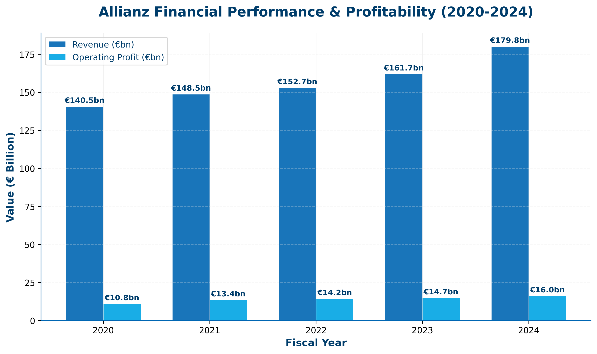
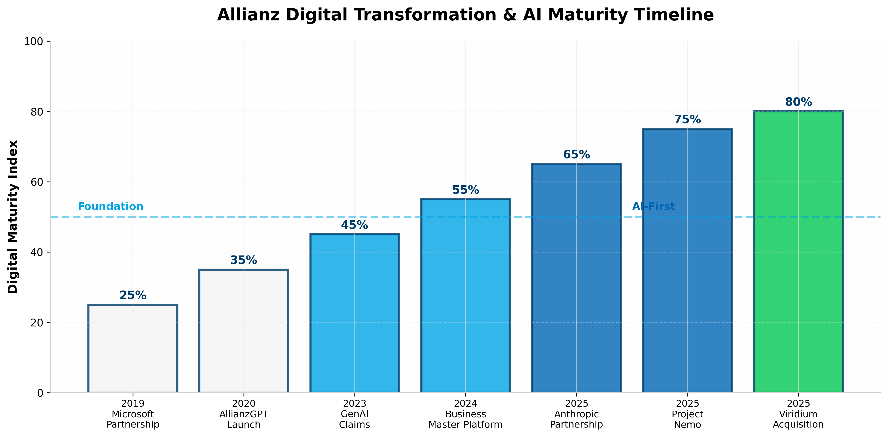
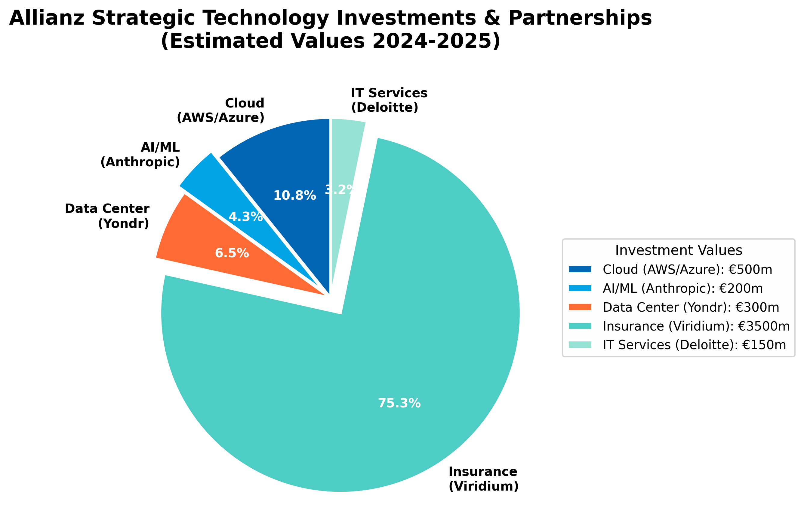
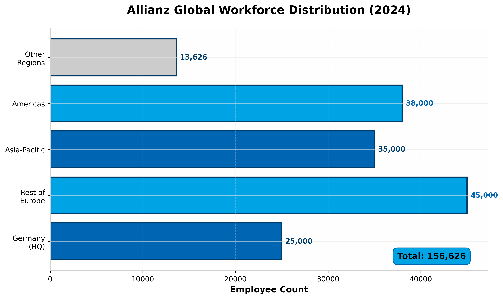

Strategic Intelligence Profile
& GTM Alignment
AI Workflow Automation & Data Center Services
Investment Thesis & Opportunity Assessment
"Technology with Heart" Strategy Analysis
Executive Summary
Strategic Overview & Investment Highlights
Company Profile
- Scale: €179.8bn revenue, 156,626 employees, 70+ countries
- Structure: Property-Casualty, Life/Health, Asset Management (PIMCO/AGI)
- HQ: Königinstrasse 28, 80802 Munich, Germany
- Strategic Priority: "Technology with Heart" - Human-centric AI
- Digital Maturity: 80% cloud-native, Agentic AI deployed (Project Nemo)
Key Investment Thesis
- €16.0bn operating profit (2024 record) - strong investment capacity
- €3.5bn Viridium acquisition (Aug 2025) - platform consolidation
- Anthropic partnership (Jan 2026) - Enterprise AI at scale
- 80% reduction in claims processing time via Project Nemo
- 6 strategic data centers - hybrid cloud infrastructure opportunity
Financial Performance & Scale
5-Year Trajectory & Profitability Metrics

Source: Allianz Annual Reports 2020-2024
Strategic Context
Record financial results with 11.2% revenue growth. Strong Solvency II ratio (209%) provides capacity for technology investments. €2bn share buyback announced Feb 2025 signals capital discipline.
Key Decision Makers & Org Structure
Technology Leadership & Influence Mapping
Primary Targets
Barbara Karuth-Zelle
COO & Board Member (Allianz SE)
Oversees digital transformation, IT governance, Allianz Technology. Former CEO Allianz Technology (2016-2020). Health economics PhD.Oliver Bäte
CEO (Allianz SE)
Strategic direction, capital allocation. Former COO (2007-2014). Driving "renewed strategy" announced at Capital Markets Day 2024.Christof Mascher
Former COO, Current Board Member
Architect of Allianz Business System (ABS). Blockchain/Insurtech pioneer. Board oversight of technology strategy.Technical Influencers
Thomas Baach
Managing Director, Core Insurance Platforms (Allianz Technology)
Led Project Nemo (agentic AI claims). Responsible for Business Master Platform deployment.Maria Janssen
Chief Transformation Officer (Allianz Services)
Agentic AI champion. Oversees hyper-automation strategy and AI governance framework.Access Strategy
Entry: Karuth-Zelle via McKinsey/FT dialog engagement referencing her "human element" philosophy. Technical: Baach via Project Nemo/agentic AI case studies. Business: Bäte via capital efficiency and operational leverage messaging.
Technology Stack Architecture
Current State & Infrastructure Landscape
Cloud & Data Platform
| Layer | Technology | Status |
|---|---|---|
| Primary Cloud | AWS + Microsoft Azure (Hybrid) | ● Active |
| Core Insurance System | Allianz Business System (ABS) | ● Deployed Globally |
| Future Platform | Business Master Platform (BMP) | ● Rolling Out (Spain/Australia) |
| AI/ML Platform | Anthropic Claude (Enterprise) | ● Jan 2026 Launch |
| Internal AI | AllianzGPT (Internal ChatGPT) | ● 2020 Deployed |
| Data Centers | 6 Strategic (Frankfurt, Paris, Phoenix, Edison, Singapore, Sydney) | ● Private + Public Cloud |

Infrastructure Notes
- DC Consolidation: 100+ facilities → 6 strategic (2012-2019)
- Allianz Global Network: 220,000 LAN connections (AGN)
- Hybrid Strategy: Public cloud + private DC for regulatory
- Recent: Yondr data center investment (July 2025)
AI & Digital Transformation Timeline
From AllianzGPT to Agentic AI (Project Nemo)

Phase 1: Foundation
2019-2020: Microsoft strategic partnership, AllianzGPT launch, cloud infrastructure consolidation.
CompletePhase 2: Acceleration
2023-2024: GenAI claims processing, Business Master Platform development, 55% digital maturity.
ActivePhase 3: Agentic AI
2025+: Anthropic partnership, Project Nemo (7 AI agents), Viridium integration, human-in-the-loop at scale.
OpportunityStrategic Investments & Ecosystem
Technology Partnerships & M&A Activity

Estimated investment values 2024-2025
Key Strategic Moves
| Investment | Value/Scope | Strategic Impact |
|---|---|---|
| Viridium Acquisition | €3.5bn (Consortium) | 3.4m policies, €68bn AUM, closed-book consolidation platform |
| Anthropic Partnership | Enterprise AI (Jan 2026) | Claude models for 156k employees, AI agents, compliance framework |
| Yondr Investment | Minority stake (Jul 2025) | Data center infrastructure, 420MW capacity, DigitalBridge partnership |
| Deloitte Alliance | Platform development | Corporate insurance platform (AWS, MongoDB, Kafka) |
AI & Automation Initiatives
Project Nemo & Enterprise AI Strategy
Project Nemo: Agentic AI in Action
Launched: July 2025 (Australia)
Use Case: Food spoilage claims post-natural catastrophe
Result: 80% reduction in processing time (days → hours)
7 AI Agents Architecture:
- 🎯 Planner Agent: Orchestrates workflow
- 🔒 Cyber Agent: Data security oversight
- ✓ Coverage Agent: Policy verification
- 🌤 Weather Agent: Event confirmation
- 🔍 Fraud Agent: Anomaly detection
- 💰 Payout Agent: Amount calculation
- 📋 Audit Agent: Decision logging
Anthropic Partnership (Jan 2026)
1. Enterprise AI Access
Claude models (including Claude Code) for all 156k employees. Thousands of developers already using for software engineering.
2. AI Agents for Workflows
Custom agents for health & motor insurance. Multi-step workflow automation with human-in-the-loop for sensitive decisions.
3. Compliance Framework
Full audit trails for regulatory requirements. EU AI Act alignment. Model Context Protocols for secure data handling.
Global Regional Footprint
Operational Hubs & Employee Distribution

Strategic Locations
| Region | Key Offices | Focus |
|---|---|---|
| Germany (HQ) | Munich, Frankfurt, Berlin | Global HQ, Allianz Technology |
| Rest of Europe | London, Paris, Amsterdam, Zurich | Regional Hubs, AGI Offices |
| Americas | New York, Chicago, Phoenix | PIMCO, Allianz Life US |
| Asia-Pacific | Singapore, Sydney, Tokyo | Growth Markets, Data Centers |
Data Center Footprint
Strategic DCs: Frankfurt, Paris, Phoenix, Edison (US), Singapore, Sydney.
Consolidation: Reduced from 100+ facilities (2012) to 6 strategic centers (2019).
Cloud: Hybrid approach with AWS/Azure public cloud + private DCs for regulatory data.
Strategic Opportunity Assessment
Immediate & Long-term Revenue Opportunities
🤖 Agentic AI Expansion
Target: Thomas Baach (Core Insurance Platforms)
Pain: Project Nemo successful but limited to food spoilage (Australia)
Value: Scale to travel delays, auto claims, property damage globally
Hook: Modular architecture allows rapid deployment across 70 countries
🏢 Data Center Optimization
Target: Barbara Karuth-Zelle (COO)
Pain: 6 strategic DCs aging, Yondr investment shows infrastructure focus
Value: Edge computing for regional offices, DC modernization
Hook: Sustainability focus - renewable energy, efficiency gains
⚡ Viridium Integration
Target: Oliver Bäte (CEO) + Viridium CTO
Pain: €3.5bn acquisition requires IT platform harmonization
Value: Migrate 3.4m policies to Business Master Platform
Hook: "Single, modern business platform" per Viridium strategy
📊 Underwriting Workbench
Target: Maria Janssen (Chief Transformation Officer)
Pain: Shamrock ML tool deployed but manual processes remain
Value: End-to-end automated underwriting with explainable AI
Hook: EU AI Act compliance requires transparent decision-making
Go-to-Market Strategy
Account Entry & Positioning Framework
Recommended Approach
Message: "Agentic AI at scale - beyond Project Nemo to enterprise workflows"
Channel: McKinsey/FT dialog references, WEF engagement
Message: Multi-agent orchestration, AWS/Azure native integration
Action: POC on claims workflow automation (travel or motor)
Message: Operational leverage - 80% efficiency gains at Viridium scale
Metric: Cost per claim, customer NPS, employee productivity
Competitive Positioning
- vs. Internal Allianz Technology: Augmentation not replacement. Speed-to-market for new agentic use cases.
- vs. Deloitte: Complement corporate platform build with specialized AI workflow layer.
- Differentiator: EU AI Act compliance expertise, German data sovereignty, insurance-specific agent frameworks.
Required Proof Points
- Agentic AI case studies (multi-step workflow automation)
- EU AI Act / GDPR compliance certification
- AWS/Azure partnership status (Allianz is multi-cloud)
- Insurance domain expertise (claims, underwriting)
- German language capabilities (Munich HQ)
Strategic Recommendations
Immediate Actions & Success Metrics
90-Day Action Plan
| Week | Action | Target | Success Metric |
|---|---|---|---|
| 1-2 | Engage via McKinsey/FT AI dialog content | COO Office | LinkedIn connection + profile view |
| 3-4 | Project Nemo case study & agentic AI demo | Allianz Technology | Technical meeting booked |
| 5-8 | POC proposal: Travel claims automation | Core Platforms Team | Scope defined, budget identified |
| 9-12 | Viridium integration workshop | Group Strategy | Integration roadmap agreement |
Key Insight
"Allianz has moved from 'experimentation' to 'industrialization' of AI. With the Anthropic partnership and Project Nemo's success, they need scalable agentic AI infrastructure that can deploy across 70 countries while maintaining EU AI Act compliance. The Viridium acquisition creates immediate demand for legacy platform modernization."